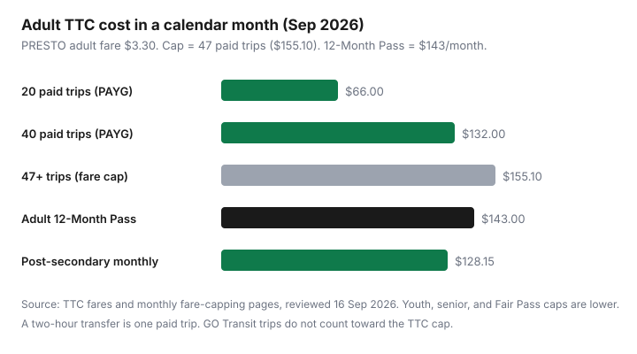

Transportation · Transit Passes & Fare Math
How TTC Monthly Fare Capping Works in 2026—and When the 12-Month PRESTO Pass Still Wins
Toronto riders still talk about “buying the monthly.” Most of those products are gone. On 1 September 2026 the TTC turned adult, youth, senior, and Fair Pass calendar passes into an automatic cap: pay as you go on the same PRESTO card, debit, credit, or wallet, and after 47 paid trips the rest of that calendar month is free. You still tap. You just stop paying.
This is not a U.S. transit-card explainer. It is the TTC’s 2026 product: a $3.30 adult PRESTO fare, a $155.10 ceiling, a surviving Adult 12-Month Pass at $143, and a post-secondary monthly at $128.15. Pair it with the overview in Spend less on getting around and the GO math in GO Transit PRESTO monthly vs PAYG if you also ride the lakeshore.
Key takeaways
- Capping is automatic. You do not opt in. You must use one payment method all month.
- Adult math: 47 × $3.30 = $155.10, then $0. The Adult 12-Month Pass is $143 if you will ride past the cap most months.
- A two-hour TTC transfer is one paid trip. Extra taps inside the window do not add to 47.
- Post-secondary monthly ($128.15) still beats the adult-rate cap. Youth, senior, and Fair Pass caps are cheaper than $155.10 because the fare is lower.
- GO, UP Express, and neighbouring agencies do not fill the TTC 47-trip bucket.
What changed in September 2026: fare capping replaces most monthly passes
The TTC’s 1 Sep 2026 news release is blunt: Youth, Adult, and Senior monthly passes, plus Youth and Senior 12-Month Passes, are discontinued. Fair Pass monthly products went with them. Capping applies to Adult, Youth, Senior, and Fair Pass customers who pay with PRESTO (plastic or wallet), Interac Debit, or credit — including those cards in a mobile wallet.
What remains, on purpose:
- Adult 12-Month Pass — $143 per month on a 12-month PRESTO contract (ttc.ca fares table, reviewed 16 Sep 2026).
- TTC Post-Secondary Monthly Pass — $128.15, still sold online, in the PRESTO app, at Shoppers Drug Mart, and PRESTO outlets. You need a TTC Post-Secondary Photo ID (Bathurst Station centre, plus on-campus pop-ups in September and October).
Toronto budget material that accompanied the change also flagged a later tightening: the 2026 cap is 47 rides, with a planned drop toward 40 rides in 2027+. Treat 47 as this year’s number. If the TTC lowers the cap, the 12-Month Pass math shifts again — re-run the table, do not keep a 2026 screenshot.
Cash still exists, and it is the expensive tap. Adult cash is $3.35 and does not earn the cap. Open-loop debit/credit is $3.30 for adults — same as PRESTO — and does cap if you use the same card. Youth, senior, and Fair Pass discounts need a registered PRESTO fare type, not a random Visa.
The 47-trip cap math at current adult PRESTO fares
| Fare type | PRESTO / open-loop fare | 47-trip cap | Pass still sold? |
|---|---|---|---|
| Adult | $3.30 | $155.10 | 12-Month only — $143/month |
| Youth (13–19) | $2.35 | $110.45 | No monthly; no 12-Month |
| Senior (65+) | $2.25 | $105.75 | No monthly; no 12-Month |
| Fair Pass | $2.10 | $98.70 | No monthly (discounted PAYG still caps) |
| Post-secondary | $3.30 PAYG | $155.10 if you PAYG | Monthly $128.15 — keep it |
Worked examples (labelled, adult $3.30):
- Hybrid 3-day office: 12 workdays × 2 taps = 24 paid trips if you transfer inside two hours each way. Cost ≈ $79.20. Far below $143. Do not buy a 12-Month Pass.
- 5-day office, no weekends: ~22 workdays × 2 = 44 paid trips ≈ $145.20, then a few more trips hit the $155.10 cap. The 12-Month Pass at $143 is a small win if you are sure you will be in the office all month.
- 5-day office plus Saturday markets: You will clear 47. Cap = $155.10 vs $143 pass. The pass wins by $12.10 every month you stay in the contract.

The old Adult monthly was $156 — one dime above the new cap. Capping is not a secret discount versus that product. It is a way to stop prepaying $156 when you might only ride 20 times. The 12-Month Pass is the product that still undercuts the cap, in exchange for a year-long PRESTO contract.
Why you must tap the same card or device all month
The TTC is explicit: trips count only on the same payment method and the same card or device. Plastic PRESTO, PRESTO in Apple/Google Wallet, a physical credit card, and that same credit card in a watch are not one bucket. Switch mid-month and you start a second counter. Riders who “just use whatever is in the phone case” are the ones who never see a free ride.
Open-loop debit and credit now cap (that is new with this rollout). That is convenient for visitors and for people who refuse to buy a PRESTO card. It is also a trap if your wallet has three cards and you rotate them. Pick one, name it in a note on your phone, and use it until the first of next month.
Keep tapping after trip 47. Fare inspectors want proof of payment. The cap waives the fare; it does not waive the tap.
When Adult 12-Month and post-secondary monthly passes still beat PAYG
Subscribe to the Adult 12-Month Pass at prestocard.ca if you expect to clear 47 paid TTC trips in most of the next 12 months. Break-even versus the cap is not 47 trips — you already get those for $155.10 without a contract. Break-even versus the cap is “I will hit the cap and I will keep hitting it.” The pass saves $12.10 in those months. It costs you if you take a six-week trip, get sick, or shift to two office days. PRESTO 12-month contracts are not a casual subscription; the TTC has long said refunds are not a mid-year feature. Read the current contract before you click.
Post-secondary students should almost always load the $128.15 monthly if they commute on TTC more than about 39 adult-rate trips (128.15 ÷ 3.30 ≈ 38.8). Below that, PAYG wins. Do not “use capping instead” and pay $155.10 at the adult fare. The pass exists because the cap still charges adult $3.30.
Youth and seniors no longer have a 12-Month Pass. Their cap ($110.45 / $105.75) is the product. Fair Pass riders cap at $98.70 on the $2.10 fare — cheaper than the old Fair Pass monthly in the budget table. Stay registered in the City program so PRESTO knows your fare type.
GO Transit and regional transfers: what capping does and does not cover
The 47-trip counter is a TTC counter. A GO train tap does not increment it. Ontario’s One Fare program can zero or discount the TTC portion when you connect to GO, Brampton Transit, Durham Region Transit, MiWay, or York Region Transit on the same payment method, within the transfer window (two hours if you start on local transit, three hours if you start on GO — Metrolinx One Fare page, reviewed Sep 2026). That is transfer integration, not a shared cap.
If your commute is GO + TTC, price the GO loyalty ladder separately in GO PRESTO monthly vs PAYG. You may cap TTC on weekend city trips while still paying GO on weekdays. That is fine. Just do not expect 47 mixed-region taps to unlock free subway rides.
UP Express, Wheel-Trans eligibility, and two-hour TTC-only transfers follow their own rules. When in doubt: if the reader is not a TTC PRESTO reader, it is not a TTC paid trip for capping.
A one-month tracking worksheet for new Toronto riders
New arrivals (the r/askTO thread this cluster started from) should not guess. Run one calendar month as a test.
- Register one PRESTO card or one open-loop card. Put the others away.
- For 30 days, tick every paid TTC trip — the tap that started a two-hour window. Ignore free transfer taps.
- At month-end, multiply paid trips by your fare. If you hit 47, you paid $155.10 (adult) and the rest were free.
- Compare that cash to $143 × 12 if you are considering the 12-Month Pass. Only subscribe if at least nine or ten of the next twelve months look like “cap months.”
- If you are a student, compare instead to $128.15. Load the pass next month if you beat that number.
PRESTO transaction history and the TTC fare-capping page are the official scoreboard. A notes app works if you are still waiting for the account to sync.
Common mistakes that reset your trip count
- Tapping a watch one week and a phone the next (two wallets, two counts).
- Paying cash “just this once” — no cap credit, and a higher fare.
- Using a partner’s PRESTO on Fridays. Their trips do not help you.
- Assuming a GO tap is “transit” for the TTC cap.
- Not tapping after you have capped, then arguing with a fare inspector.
- Buying a mental-model monthly on the eighth of the month because that is when Shoppers used to sell passes. Capping resets on the first of the calendar month whether you are ready or not.
The cheapest TTC month is the one where you counted last month’s taps before you signed a 12-month contract. Capping is the default. The pass is a specialist tool for people who already know they live on the system.
Sources & date stamps
- TTC, “Monthly fare capping now in effect at the TTC” (1 Sep 2026) and fare-capping explainer (ttc.ca/farecapping).
- TTC, Fares and passes (adult PRESTO $3.30; Adult 12-Month $143; post-secondary monthly $128.15; cash $3.35) — reviewed 16 Sep 2026.
- City of Toronto / TTC operating-budget backgrounder on fare capping (47 rides in 2026, planned 40 in 2027+; category cap table).
- Metrolinx, Ontario’s One Fare Program (TTC–GO and local-agency transfer windows).
- CBC Toronto reporting on the capping launch (context; fares taken from TTC, not from headlines).
Frequently asked questions
Do I need to buy a TTC monthly pass to get the fare cap?
No. Capping is automatic for eligible pay-as-you-go trips paid with the same PRESTO card, PRESTO in a mobile wallet, Interac Debit, or credit card (including a wallet). After 47 paid trips in a calendar month, the rest of that month’s TTC travel is free if you keep tapping.
How much is the adult TTC cap in September 2026?
Adult PRESTO and open-loop fare is $3.30. Forty-seven paid trips cost $155.10, then additional TTC trips that month are $0. The Adult 12-Month Pass is $143 per month if you stay in the 12-month PRESTO contract. Confirm live fares on ttc.ca.
Does a GO Transit trip count toward the TTC 47-trip cap?
No. The TTC cap only counts eligible TTC fares. Ontario’s One Fare program can discount the TTC portion of a GO connection when you tap the same payment method, but that is a transfer rule, not a TTC trip toward 47.
What happens if I tap my phone some days and a plastic PRESTO card on others?
Those are separate payment methods. Each accumulates its own trip count. You can pay 47 trips on each without ever hitting free travel. Pick one card or one device and stick with it for the calendar month.
Should post-secondary students use fare capping?
Usually no, if you still qualify for the TTC Post-Secondary Monthly Pass at $128.15. That is cheaper than the adult-rate cap of $155.10. You need a TTC Post-Secondary Photo ID. If you only ride a handful of days, PAYG at $3.30 may still be cheaper — count last month’s paid trips.